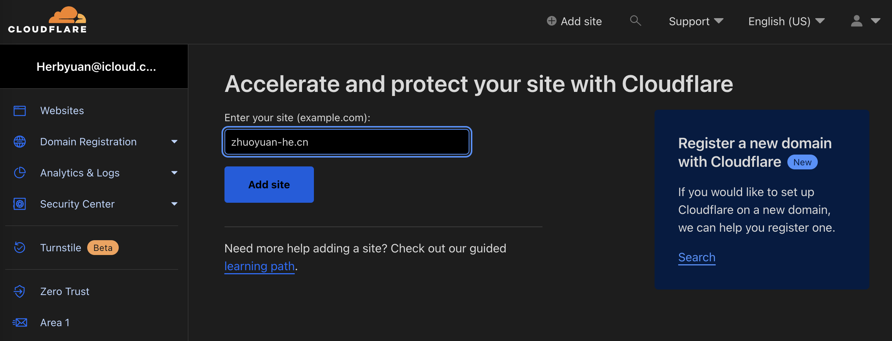
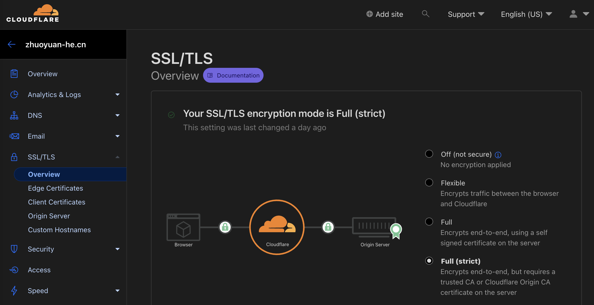
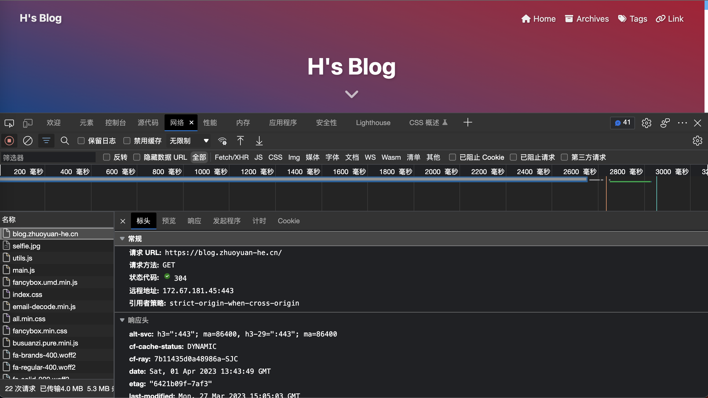

使用CloudFlare代理个人网站
使用CloudFlare代理个人网站
引言
现在这个三大运营商基本上都会给 IPv6 的公网地址, 所以我们如果需要从外网访问家里的内容, 只需要直接使用 IPv6 的地址就可以访问到. 如果访问上有什么问题, 首先检测一下家里的硬件是不是支持, 然后确定光猫宽带上的 IPv6 已经打开. 如果是近几年新装的宽带的话, 拨号的光猫都会支持 IPv6,所以即使路由器不支持 IPv6, 直接使用光猫拨号, 把家里的路由器当成交换机就可以使用 IPv6 了. 现在光猫性能都不差, 已经不太会有影响到拨号性能的问题了. 所以如果不使用软路由的情况下, 基本上都不会有问题; 如果使用的是桥接后软路由拨号, 我认为有这样的要求设备肯定也不会有兼容性问题问题.
现在的公网 IPv6 给的都是浮动地址, 过一段时间就有可能改变. 如果想用固定的方式访问, 可以绑定到自己的域名后使用 DDNS 服务更新 IP 的变化. DDNS-GO 是一款比较好的软件, 主流的 DNS 服务商都能有很好的支持. 但这部分不是本篇的重点, 教程也有很多, 所以不做展开.
现实中很大的问题就是外面的很多设备还是不支持 IPv6, 比如公共热点, 酒店的WiFi或者其他稍落后的家庭网络. 本文要解决的就是使用 IPv4 访问纯 IPv6 网站. 简单来说就是使用免费的 CloudFlare 代理我们的资源, 在访问我们的资源时其实是用 IPv4 访问了 CloudFlare 的服务器, 然后让 CF 代为获取 IPv6 的内容.
将 DNS 解析设置为 CloudFlare
注册一个 CloudFlare 的账户, 只要使用免费的计划就能满足我们的需求. 然后将我们的域名添加到 CloudFlare.
按照提示输入二级域名后会自动解析当前域名的 DNS 记录. 此处可以定义哪些记录需要使用 CloudFlare 的代理, 哪些直接做 DNS 解析. 这里如果扫描不全没有关系后期可以通过 DDNS 加回来. 然后最重要的一步就是将 DNS 解析迁移到 CloudFlare 的服务器. 这里我使用的是腾讯云购买的域名, 在 我的域名-对应域名概览-DNS 解析 中修改 DNS 服务器为 CloudFlare 给出的地址. 然后等待 CloudFlare 接管即可.
这里接管需要所有原先 DNS 服务器的解析记录被清除, 不然冲突期间访问可能有意料不到也很难排查的问题. 这个过程大概需要几个小时, 最长不应该超过 24 小时, 如果刚修改完发现怎么都访问不了, 不妨先睡一觉起来再试.
设置 DDNS
安装 DDNS-GO 服务后, 可以登录对应网页, 添加 Token 和 解析记录. 在这个链接新建一个Token, 在模版中选择第一个 编辑区域 DNS , 获取密钥之后填到对应的位置, 就可以使用 API 更新 DNS 记录. 此时可以添加所有需要动态更新的域名了.
CloudFlare 中的网站设置
对于不需要代理的域名, 设置好之后原先的 SSL 依然可以使用, 不需要作任何修改就能无痛使用. 对于需要代理的网站, 有一些细节需要注意.
在 SSL/TLS 面板中, 可以看到有 4 种加密模式.
Off代表用户访问 CF 服务器以及 CF 访问源地址都不使用 SSL 加密.Flexible代表用户访问 CF 服务器会使用 SSL 加密, 但是 CF 访问源地址不会使用 SSL.Full代表两段访问都会使用 SSL 加密, 即两段通信都会基于HTTP协议. 这里源服务器可以使用自签名的证书.Full (strict)代表两段都会使用 SSL 加密, 且 CF 访问源服务器时要求CA或者Cloudflare Origin CA证书.
额外的说明: 使用 SSL 加密会自动访问 443 端口, 所以根据源服务器提供的端口等情况, 应当选择合适的加密模式, 否则会造成无法访问. 最简单的情况下源服务器不做任何加密, 开放 80 端口, 此时建议使用
Flexible模式, 用户访问时得到的就会是https开头的地址, 不会报隐私错误. 当然最好的就是两段都使用 SSL,Strict模式可以省很多事也更安全.
用户访问 CF 服务器这一段, CloudFlare 会自动注册并延期证书, 不用额外设置.
这里推荐使用 CF 的 CA 证书, 时间可以长达 10 年, 只要不从 CloudFlare 迁出, 基本上不需要考虑续期问题.
对于端口的注意
并不是所有的端口都可以使用代理. 对于中国大陆, 应该只有 80 和 443 两个端口是可用的, 对应默认的 HTTP 和 HTTPS 协议. 其他的端口使用理论上就只能使用DNS解析直连源服务器了.
总结
设置完后访问域名, 打开开发模式, 可以看到解析到的已经不再是自己的 IPv6 地址, 而是 CloudFlare 的地址. 这样的好处除了构造了 IPv4 中继, 就是自己的真实域名被隐藏了, 有助于防护恶意攻击.
设置完并可成功访问后, 可以进行线路的测速. 免费用户一个月可以进行 4 次测速, 所以一定要确保可以连通了再测速.
在一天之后可以查看网页的访问数据. CloudFlare 会自动对代理的网站使用防护, 如果自己的网站被 DDos 打得不行了, 可以开启 CloudFlare 的 5秒盾, 所有的访问会等待 5 秒进行 CF 的安全检测.
最后在访问速度上, 代理带来的延时大概在 200 到 500 毫秒. 对于静态网站, 代理能很好地解决家庭 IP 的局限问题, 并且不太会影响用户体验. 但是如果有需要实时或者大流量的传输, CF 的效果还是不尽人意, 还是要依靠直连啊.